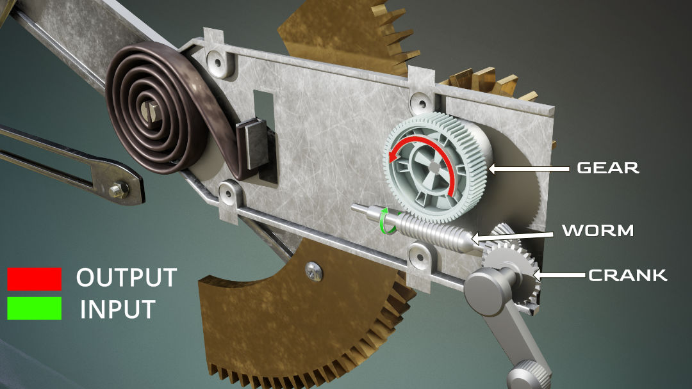

How do car windows works?
Have you been amazed at how easily you can raise and lower your car windows by just pressing a button? The mechanism inside your car window is so compact and smart that the window always moves straight and smooth. The power window has replaced the traditional manual window system. Also, you might have noticed that you’re not able to move the window even if you try to push it down or pull it up manually. In this article I will explain this tricky mechanism that controls your car window.